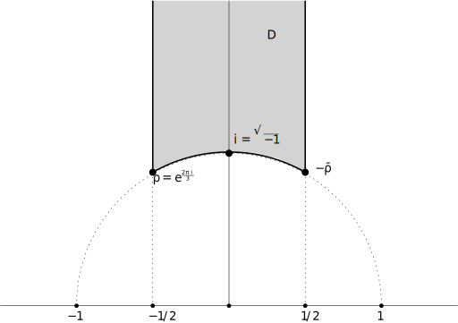

1 Modular forms of level one
1.1 Two examples
Modular forms have been for a while a central object in number theory. They have connections to many research areas: arithmetic, combinatorics, analysis, geometry, representation theory,…Since they appear essentially everywhere you look at, it is quite reasonable to wish to understand them.
Here is a not too serious reason: have you ever tried to calculate \(e^{\pi\sqrt{163}}\)? It turns out that it is \[e^{\pi\sqrt{163}} = 262537412640768743.999999999999250072597\ldots\] which seems too close to an integer to be a coincidence. That is, until you learn about modular forms: it turns out that this number is related to a value of a modular funtion (the \(j\)-function), which is known to be an integer.
In this introduction I give two more examples that hopefully convince the reader of the importance of modular forms in number theory. You can find many more examples in (Bruinier et al. 2008, chap. 1).
1.1.1 Partitions and Ramanujan’s \(\tau\)-function
For each \(n\geq 0\), define the partition function \(p(n)\) as \[p(n)=\#\{\text{ways of representing $n$ as a sum of natural numbers }\}.\] As a convention, \(p(0)=1\). Also, note that: \[\begin{align*} p(1) &= 1\\ p(2) &= 2 = \#\{1+1,2\}\\ p(3) &= 3 = \#\{1+1+1, 1+2, 3\}\\ p(4) &= 5 = \#\{1+1+1+1,1+1+2,1+3,2+2,4\}\\ p(5) &= 7 = \#\{1+1+1+1+1,1+1+1+2,1+1+3,1+4,1+2+2,2+3,5\}\\ \ldots& \end{align*}\] In order to package all these numbers we may consider the following formal powers series: \[P(q) = \sum_{n=0}^\infty p(n)q^n,\] where we think of \(q\) as a formal variable.
Lemma 1.1 There is an infinite product decomposition \[P(q) = \prod_{m=1}^\infty \frac{1}{1-q^m}.\]
Proof. We need to look at the right-hand side. Each of the factors can be written as \(\sum_{k=0}^\infty q^{km}\), so the right-hand side looks like \[\prod_{m=1}^\infty\sum_{k=0}^\infty q^{km}.\] Now we collect the terms contributing to \(q^n\), for a fixed \(n\). These come from taking \(1\) from all but finitely many of the infinite sums, and then collecting \(q^{k_1m_1}\), \(q^{k_2m_2}\), …, \(q^{k_rm_r}\) from \(r\) other factors. This is subject to the condition \[k_1m_1+k_2m_2+\cdots+k_rm_r = n,\] and note that the \(m_i\) are all different because they are taken from different factors. There are exactly \(p(n)\) such choices, as we wanted to show.
In view of the previous lemma, a convenient way to study the partition function is through another very popular function, defined by the following infinite product: \[\Delta(q) = q\prod_{n=1}^\infty (1-q^n)^{24}.\] Note that we have: \[\Delta(q) = q\prod_{n=1}^\infty (1-q^n)^{24} = \frac{q\prod(1-q^n)^{25}}{\prod 1-q^n} = \left(\prod_{n=1}^\infty(1-q^n)^{25}\right) \sum_{n=0}^\infty p(n)q^{n+1}.\] We define the Ramanujan’s tau function as the Fourier coefficients of \(\Delta\). That is, \[\Delta(q)=\sum_{n=1}^{\infty} \tau(n)q^n.\]
Later in this course you will be able to prove the following striking result.
Theorem 1.1 For each \(n\geq 1\), we have: \[\tau(n)\equiv \sum_{d\mid n} d^{11}\pmod{691}.\] Moreover, the partition function satisfies the following congruences: \[p(5n+4) \equiv 0\pmod{5},\quad \forall n,\] \[p(7n+5) \equiv 0\pmod{7},\quad \forall n,\] \[p(11n+6) \equiv 0\pmod{11},\quad \forall n.\]
1.1.2 A modular form of level \(11\) that knows about congruences
Consider another modular form: \[f(z)=q\prod_{n=1}^\infty (1-q^n)^2(1-q^{11n})^2 = q-2q^2-q^3+2q^4+q^5+2q^6+\cdots = \sum_{n=1}^\infty a(n)q^n.\]
Theorem 1.2
\(a(nm) = a(n)a(m)\) whenever \((n,m)=1\).
\(|a(p)|\leq 2\sqrt{p}\) for all prime \(p\).
Consider the equation: \[E\colon Y^2+Y=X^3-X^2-10X-20,\] and let \(N(p)\) be the number of solutions in \({\mathbb{F}}_p\). Heuristically we should think that \(N(p)\simeq p\).
Theorem 1.3 \(|p-N(p)|\leq 2\sqrt{p}\).
The theory of modular forms allows to prove that the \(E\) and \(f\) “correspond” to each other:
Theorem 1.4 For all primes \(p\), we have \(a(p) = p - N(p)\).
This allows us to easily calculate (from \(f\)) what is \(N(p)\) for all \(p\). We say in this case that \(E\) “is modular”. In (Diamond and Shurman 2005) you can learn how to attach an elliptic curve to a modular form (this is called the “Eichler–Shimura” construction). It is much harder to reverse this process, and this is what A.Wiles did in order to prove Fermat’s Last Theorem.
1.2 The upper half-plane
This section introduces the seemingly innocuous upper half-plane \({\mathbb{H}}\).
Definition 1.1 The upper half-plane \({\mathbb{H}}\) is the set of complex numbers with positive imaginary part: \[{\mathbb{H}}= \{ z=x+iy ~|~ \Im(z)>0\}.\]
The upper half-plane appears in the classification of Riemann surfaces: there are only three of them which are simply connected which are the complex plane, the complex sphere, and \({\mathbb{H}}\).
The general linear group \(\operatorname{GL}_2({\mathbb{R}})\) consists of all \(2\times 2\) invertible matrices with entries in \({\mathbb{R}}\). It contains the subgroup \(\operatorname{GL}_2^+({\mathbb{R}})\) of matrices with positive determinant. The \({\operatorname{SL}}_2({\mathbb{R}})\subset \operatorname{GL}_2^+({\mathbb{R}})\) consists of those matrices with determinant \(1\). For \(\gamma=\left(\begin{smallmatrix}a&b\\c&d\end{smallmatrix}\right)\in \operatorname{GL}_2({\mathbb{R}})\) and \(z\in{\mathbb{H}}\), define \(\gamma z\) as: \[ \gamma z = \left(\begin{matrix}a&b\\c&d\end{matrix}\right) z = \frac{az+b}{cz+d}. \tag{1.1}\]
Lemma 1.2 Let \(\gamma=\left(\begin{smallmatrix}a&b\\c&d\end{smallmatrix}\right)\in\operatorname{GL}_2({\mathbb{R}})\). Then: \[\Im(\gamma\tau) = \frac{\det(\gamma)}{|c\tau+d|^2}\Im(\tau),\quad \gamma=\left(\begin{matrix}a&b\\c&d\end{matrix}\right).\]
Proof. One just needs to compute \[\begin{align*} \Im(\gamma\tau) &= \Im(\frac{a\tau + b}{c\tau+d}) = \Im\left(\frac{(a\tau+b)(c\bar\tau + d)}{|c\tau+d|^2}\right)\\ &= \frac{\Im(ac|\tau|^2 +ad\tau + bc\bar\tau +bd)}{|c\tau+d|^2}=\frac{ad\Im(\tau) - bc\Im(\tau)}{|c\tau+d|^2}. \end{align*}\]
Corollary 1.1 \(\operatorname{GL}_2^+({\mathbb{R}})\) acts on the left on \({\mathbb{H}}\).
Note that the determinant gives a decomposition \[\operatorname{GL}_2^+({\mathbb{R}}) = {\operatorname{SL}}_2({\mathbb{R}}) \times {\mathbb{R}},\] and since the scalar matrices (those of the form \(\left(\begin{smallmatrix}\lambda&0\\0&\lambda\end{smallmatrix}\right)\)) act trivially on \({\mathbb{H}}\), from now on we will restrict our attention to \({\operatorname{SL}}_2({\mathbb{R}})\). In fact, since the scalar matrix \(\left(\begin{smallmatrix}-1&0\\0&-1\end{smallmatrix}\right)\) belongs to \({\operatorname{SL}}_2({\mathbb{R}})\), the above action on \({\mathbb{H}}\) factors through \(\operatorname{PSL}_2({\mathbb{R}})={\operatorname{SL}}_2({\mathbb{R}})/\{\pm 1\}\), which is called the .
From this action we can deduce a right action on functions on \({\mathbb{H}}\), by precomposing: \[(f\cdot \gamma)(z) = f(\gamma z).\] However, we will need slightly more general actions on functions, but before we introduce a piece of notation that will later prove useful.
Definition 1.2 The \(j\)-function is the function \[j\colon \operatorname{GL}_2^+({\mathbb{R}})\times {\mathbb{H}}\longrightarrow{\mathbb{C}}\] given by: \[j(\gamma,z) = cz+d,\quad \gamma = \left(\begin{matrix}a&b\\c&d\end{matrix}\right).\]
The following lemma gives a very interesting property of the automorphy factor.
Lemma 1.3 For every \(\gamma_1\), \(\gamma_2\) in \(\operatorname{GL}_2^+({\mathbb{R}})\) and for every \(z\in{\mathbb{H}}\) we have: \[j(\gamma_1\gamma_2,z) = j(\gamma_1,\gamma_2z)j(\gamma_2,z).\]
Finally, we define an action of \(\operatorname{GL}_2^+({\mathbb{R}})\) on functions \(f\colon{\mathbb{H}}\longrightarrow{\mathbb{C}}\), for each \(k\in{\mathbb{Z}}\).
Definition 1.3 The slash operator is defined as \[(f|_k\gamma)(z) = (\det \gamma)^{k-1} j(\gamma,z)^{-k}f(\gamma z).\]
The cocycle property and the multiplicativity of the determinant implies that if \(f\) is a function, then: \[f|_k(\gamma_1\gamma_2) = (f|_k\gamma_1)|_k\gamma_2, \quad \forall \gamma_1,\gamma_2\in\operatorname{GL}_2^+({\mathbb{R}}).\] That is, for each \(k\) the weight-\(k\) slash operator defines an action of \(\operatorname{GL}_2^+({\mathbb{R}})\) on functions on the upper-half plane.
1.2.1 Group-theoretic description of \({\mathbb{H}}\)
Recall that \({\operatorname{SL}}_2({\mathbb{R}})\) acts on \({\mathbb{H}}\). If \(\tau=x+iy\in{\mathbb{H}}\), then define \[s_\tau =\left(\begin{matrix}y^{1/2}&xy^{-1/2}\\0&y^{-1/2}\end{matrix}\right).\] Note that \(s_\tau i = \tau\), and therefore \({\operatorname{SL}}_2({\mathbb{R}})\) acts transitively on \({\mathbb{H}}\).
Lemma 1.4 The stabilizer in \({\operatorname{SL}}_2({\mathbb{R}})\) of \(i\) is the compact subgroup of \({\operatorname{SL}}_2({\mathbb{R}})\): \[\operatorname{SO}_2({\mathbb{R}})=\left\{\left(\begin{matrix}\cos\theta&-\sin\theta\\\sin\theta&\cos\theta\end{matrix}\right) ~|~ \theta\in [0,2\pi]\right\}\]
Proof. Let \(g=\left(\begin{smallmatrix}a&b\\c&d\end{smallmatrix}\right) \in{\operatorname{SL}}_2({\mathbb{R}})\) stabilize \(i\). That means that: \[\frac{ai + b}{ci +d} = i,\] or equivalently that \[ai+b = -c+di.\] Since the entries of \(g\) are real, this means that \(a=d\) and \(b=-c\). Therefore \(g=\left(\begin{smallmatrix}a&b\\-b&a\end{smallmatrix}\right)\). Since moreover \(\det(g)=a^2+b^2=1\), we deduce that \(g\in \operatorname{SO}_2({\mathbb{R}})\).
The lemma gives a bijection: \[{\mathbb{H}}\longrightarrow{\operatorname{SL}}_2({\mathbb{R}})/\operatorname{SO}_2({\mathbb{R}}),\quad \tau\mapsto s_\tau\operatorname{SO}_2({\mathbb{R}}),\] whose inverse maps \(g\operatorname{SO}_2({\mathbb{R}})\mapsto g\cdot i\).
1.2.2 The quotient \({\operatorname{SL}}_2({\mathbb{Z}})\backslash {\mathbb{H}}\) as a topological space
We end this section by showing that the quotient \({\operatorname{SL}}_2({\mathbb{Z}})\backslash {\mathbb{H}}\) is a Hausdorff space.
Lemma 1.5 Let \(U_1\) and \(U_2\) be two open sets in \({\mathbb{H}}\). Then the set \[S = \{\gamma\in {\operatorname{SL}}_2({\mathbb{Z}}) ~|~ \gamma U_1 \cap U_2 \neq \emptyset\}\] is finite.
Proof. First observe that the matrices \(s_{\gamma\tau}\) and \(\gamma s_\tau\) both send \(i\) to \(\gamma\tau\). By the identification \({\mathbb{H}}= {\operatorname{SL}}_2({\mathbb{R}})/\operatorname{SO}_2({\mathbb{R}})\) we deduce that \(\gamma s_\tau\operatorname{SO}_2({\mathbb{R}})=s_{\gamma\tau}\operatorname{SO}_2({\mathbb{R}})\). Given two points \(\tau_1\) and \(\tau_2\) of \({\mathbb{H}}\), we have \(\gamma\tau_1 =\tau_2\) if and only if \(s_{\gamma\tau_1}\operatorname{SO}_2({\mathbb{R}}) = s_{\tau_2}\operatorname{SO}_2({\mathbb{R}})\). We have just seen that the left hand side equals \(\gamma s_{\tau_1}\operatorname{SO}_2({\mathbb{R}})\). We deduce that \(\gamma\tau_1=\tau_2\) if and only if \(\gamma\) belongs to the conjugate: \(s_{\tau_2}\operatorname{SO}_2({\mathbb{R}}) s_{\tau_1}^{-1}\). Therefore the set \(S\) is a subset of the set \[\{\gamma\in{\operatorname{SL}}_2({\mathbb{Z}}) ~|~ \gamma \overline U_1 \cap \overline U_2 \neq \emptyset\}\] which in turn can be written as \[{\operatorname{SL}}_2({\mathbb{Z}})\cap s_{\overline U_2} \operatorname{SO}_2({\mathbb{R}}) s_{\overline U_1}^{-1}.\] Since \({\operatorname{SL}}_2({\mathbb{Z}})\) is discrete and the other term is compact, the intersection, and hence \(S\), is finite.
Proposition 1.1 The action of \({\operatorname{SL}}_2({\mathbb{Z}})\) on \({\mathbb{H}}\) is proper discontinuous. That is, given any \(\tau_1\), \(\tau_2\) in \({\mathbb{H}}\), there are neighborhoods \(U_1\) and \(U_2\) such that for each \(\gamma\in {\operatorname{SL}}_2({\mathbb{Z}})\) either
\(\gamma\tau_1=\tau_2\), or
\(\gamma U_1\cap U_2 = \emptyset\).
Proof. Let \(U_1\) and \(U_2\) be any two neighborhoods of \(\tau_1\) and \(\tau_2\), and let \(\gamma\in S\). If \(\gamma\tau_1=\tau_2\) then we do not need to do anything. Otherwise, if \(\gamma U_1\cap U_2\neq \emptyset\) then we may replace \(U_2\) with \(V_2\) and \(U_1\) with \(\gamma^{-1} V_1\) if \(V_1\cap V_2=\emptyset\), \(\tau_2\in V_2\) and \(\gamma\tau_1\in V_1\):
Since the set of \(\gamma\) such that these intersections are nonempty is finite, this process terminates after a finite number of steps and will leave us with the right neighborhoods.
Corollary 1.2 The quotient \(Y(1) = {\operatorname{SL}}_2({\mathbb{Z}})\backslash{\mathbb{H}}\) is Hausdorff.
Proof. Pick \(\pi(\tau_1)\neq \pi(\tau_2)\) in \(Y(1)\), and let \(U_1\) and \(U_2\) be neighborhoods as in the Proposition. For every \(\gamma\in{\operatorname{SL}}_2({\mathbb{Z}})\) we have \(\gamma\tau_1\neq \tau_2\) by the choice of \(\tau_1\) and \(\tau_2\). Therefore for every \(\gamma\in{\operatorname{SL}}_2({\mathbb{Z}})\) we have \(\gamma U_1\cap U_2=\emptyset\). Therefore \(\pi(U_1)\cap\pi(U_2)=\emptyset\). It remains to show that \(\pi(U_i)\) is an open set. Indeed, if \(U\subseteq{\mathbb{H}}\) is an open set, then \[\pi^{-1}(\pi(U)) = \cup_{\gamma\in{\operatorname{SL}}_2({\mathbb{Z}})} \gamma U\] is a union of open sets. Therefore it is open. We have showed that \(\pi(U)\) is open (because of the quotient topology). Therefore each of the \(\pi(U_i)\) is open, as we wanted to show.
1.3 Basic definitions of modular forms
Let \({\operatorname{SL}}_2({\mathbb{Z}})\subset{\operatorname{SL}}_2({\mathbb{R}})\) be the subgroup of matrices with entries in \({\mathbb{Z}}\) (and determinant \(1\)), which of course still acts on functions as we have seen.
Definition 1.4 A holomorphic function \(f\colon {\mathbb{H}}\longrightarrow{\mathbb{C}}\) is called weakly modular of weight \(k\in{\mathbb{Z}}\) for \({\operatorname{SL}}_2({\mathbb{Z}})\) if \(f|_k\gamma = f\) for all \(\gamma\in{\operatorname{SL}}_2({\mathbb{Z}})\). Explicitly: \[ f(\gamma\cdot z) = j(\gamma,z)^k f(z),\quad\forall \gamma\in{\operatorname{SL}}_2({\mathbb{Z}}). \tag{1.2}\]
Note that since \(-I\in{\operatorname{SL}}_2({\mathbb{Z}})\), then there are no non-zero weakly-modular functions of odd weight: \[f(z)=(-1)^kf(z)\implies f=0.\]
We will need an extra analytic property to define modular forms for \({\operatorname{SL}}_2({\mathbb{Z}})\). For now, note that: \[\frac{d(\gamma\cdot z)}{dz} = j(\gamma,z)^{-2},\] so we can rewrite the weakly-modular property by asking that the differential \(f(z)(dz)^{k/2}\) is invariant under \({\operatorname{SL}}_2({\mathbb{Z}})\). It also shows that if Equation 1.2 holds for \(\gamma_1\) and \(\gamma_2\), then it also holds for \(\gamma_1\gamma_2\).
We will see later (see Corollary 1.3) that \({\operatorname{SL}}_2({\mathbb{Z}})\) is generated by the matrices \(T=\left(\begin{smallmatrix}1&1\\0&1\end{smallmatrix}\right)\) and \(S=\left(\begin{smallmatrix}0&-1\\1&0\end{smallmatrix}\right)\). Together with the previous observation, this implies that for \(f\) to be weakly-modular it is enough to check Equation 1.2 for \(T\) and \(S\): \[f(z+1)=f(z),\quad f(-1/z) = z^k f(z).\]
The transformation property (rather, the fact that \(f(z+1)=f(z)\)) implies that \(f\) has a Fourier expansion. Another way to think about it is that there is a holomorphic map: \[\exp\colon {\mathbb{H}}\longrightarrow\{0<|q|<1\},\quad z\mapsto q=e^{2\pi i z}.\] If \(f\) is holomorphic and \(1\)-periodic, then we can define \(g(q)=f(z)\). That is, we may define: \[g(q)=f\left(\frac{\log q}{2\pi i}\right),\] where we may choose any branch of the logarithm because of the periodicity of \(f\). The function \(g\) is holomorphic on \(D'\), and thus it has a Laurent expansion \[g(q)=\sum_{n=-\infty}^\infty a(n)q^n.\] Therefore \(f\) has an expansion \[f(z) = \sum_{n=-\infty}^\infty a(n)e^{2\pi i nz}.\]
Definition 1.5 We say that \(f\) is meromorphic at infinity (respectively holomorphic at infinity) if \(f(z)=\sum_{n\geq n_0} a(n)q^n\) (respectively if in addition \(n_0=0\)).
Note that checking that \(f\) is holomorphic at infinity is the same as checking that \(f(z)\) is bounded as \(z\) approaches \(i\infty\). If \(f\) is holomorphic at infinity, then the value of \(f\) at infinity is defined to be \(f(\infty)=a(0)\).
Definition 1.6 We say that \(f\) is cuspidal if \(n_0=1\). Equivalently, if \(f(\infty)=0\).
Definition 1.7 Let \(k\in {\mathbb{Z}}\) and let \(f\colon{\mathbb{H}}\longrightarrow{\mathbb{C}}\). We say that \(f\) is a modular form of weight \(k\) for \({\operatorname{SL}}_2({\mathbb{Z}})\) if:
\(f\) is holomorphic,
\(f(\gamma z) = (cz+d)^kf(z)\) for all \(\gamma=\left(\begin{smallmatrix}a&b\\c&d\end{smallmatrix}\right)\in{\operatorname{SL}}_2({\mathbb{Z}})\), and
\(f\) is holomorphic at infinity.
A cusp form is a modular form which vanishes at infinity.
The space of modular forms of weight \(k\) is written \(M_k=M_k({\operatorname{SL}}_2({\mathbb{Z}}))\), and it contains the space of cusp forms of weight \(k\), which in turn is written \(S_k=S_k({\operatorname{SL}}_2({\mathbb{Z}}))\).
Remark 1.1. If we replace “holomorphic” with “meromorphic” above, we obtain what can be called an automorphic form. Other authors call them modular functions, but this name is used in different contexts and we will avoid it.
Note that both \(M_k\) and \(S_k\) are \({\mathbb{C}}\)-vector spaces. Also, multiplication of functions gives \(M=\bigoplus_{k\in{\mathbb{Z}}} M_k\) the structure of a graded ring. That is, \(M_rM_s\subseteq M_{r+s}\). Finally, for all odd \(k\) one has \(M_k = \{0\}\).
1.4 Eisenstein series
For \(k\geq 3\), define \[G_k(z) = \mathop{\sum{\raise 3pt\hbox{${}'$}}}_{(m,n)\in {\mathbb{Z}}^2} (mz+n)^{-k}.\]
Proposition 1.2 For all \(k\geq 3\), the function \(G_k(z)\) is a weight-\(k\) modular form, with \(G_k(\infty)=2\zeta(k)\), where \(\zeta\) is Riemann’s zeta function.
In order to prove the above result, we will need to auxiliary lemmas.
Lemma 1.6 If \(k\geq 2\), the series \[ \sum_{(c,d)\neq (0,0)} \max(c,d)^{-k} \] converges absolutely.
Proof. Consider the partial sum of the series in the box \(\{ |c| \leq N, |d| \leq N\}\). We can explicitly compute this sum, which equals \[ \sum_{n=1}^N (2n+1) n^{-k}. \] Evaluating this sum we obtain the exact value \(\zeta(k)+2\zeta(k-1)\).
Lemma 1.7 Given positive real numbers \(A>0\) i \(B>0\), consider the compact set \[ \Omega = \{z\in {\mathbb{H}}: |\Re(z)|\leq A, \Im(z) \geq B\}. \] There exists a constant \(C=C_{A,B}\) such that \[ |z + \delta| > L \max(1,|\delta|), \quad \forall \delta\in {\mathbb{R}}. \]
Proof. If \(|\delta|<1\), then \(|z+\delta|\geq B=B\max(1,|\delta|)\). If \(1\leq |\delta| \leq 10A\), then if \(\Im(z) > A\) we have \[ |z+\delta| >A \geq \frac{|\delta|}{10}, \] and if \(B\leq \Im z \leq A\) then the function \[ \left|\frac{z+\delta}{\delta}\right| \] has an absolute minimum \(m\) in the compact set \(1\leq |\delta|\leq 10A\) i \(B\leq \Im z \leq A\).
Finally, if \(|\delta|> 10A\), then \[ |z+\delta|\geq |\delta|-|z| > |\delta| - A > \frac{9}{10}|\delta|. \]
Proof (of the proposition). First, we need to show the convergence of the series for all \(z\). In order to simplify notation, we will restrict the sum to the pairs in the first quadrant. Restricting further the double sum to pairs in the box \(\{ 0 \leq c,d \leq N\}\), we have on one hand \[ \sum_{d=1}^N d^{-k} + \sum_{c=1}^N\sum_{d=1}^N (cz+d)^{-k}. \] The first summand is bounded by \(\zeta(k)\) and so we will ignore it. By restricting \(z\) to the compact \(\Omega_{A,B}\) as above, the second summand can be rewritten as \[\begin{align*} \sum_{c=1}^N\sum_{d=1}^N c^{-k}|z+d/c|^{-k} &\leq \sum_{c=1}^N\sum_{d=1}^N c^{-k} L^k \max(1,d^{-k}/c^{-k}) \\ &= L^k \sum_{c=1}^N\sum_{d=1}^N \max(c,d)^{-k}. \end{align*}\] By the first lemma, this series converges absolutely. We have already seen that it also converges absolutely in compact sets that cover all of \({\mathbb{H}}\), and thus we deduce that it converges to a holomorphic function on \({\mathbb{H}}\).
In order to compute \(G_k(\infty)\), we take the limit as \(\Im(z)\longrightarrow\infty\), which can be done while keeping \(z\in D\). In this case, thanks to the uniforme convergent of the series, we can take the term-wise limit. All terms with \(c\neq 0\) tend to zero, so we get \[ \lim G_k(z) = \sum_{n\neq 0} n^{-k} = 2 \zeta(k). \]
Proposition 1.3 For each \(k\geq 3\) the holomorphic function \(G_k\) is weakly modular.
Proof. Let \(\gamma = \left(\begin{smallmatrix}a&b\\c&d\end{smallmatrix}\right)\) be a matrix in \({\operatorname{SL}}_2({\mathbb{Z}})\). We compute \[\begin{align*} G_k(\gamma z) &= \mathop{\sum{\raise 3pt\hbox{${}'$}}}_{(m,n)} \left(m\frac{az+b}{cz+d} + n\right)^{-k}\\ &= \mathop{\sum{\raise 3pt\hbox{${}'$}}}_{(m,n)} (cz+d)^k \left(m(az+b)+n(cz+d)\right)^{-k}\\ &= (cz+d)^k\mathop{\sum{\raise 3pt\hbox{${}'$}}}_{(m,n)}\left( (am+cn)z + (bm+dn)\right)^{-k}. \end{align*}\] Note that the pair \((am+cn,bm+dn)\) is the result of multiplying the row vector \((m,n)\) by the matrix \(\left(\begin{smallmatrix}a&b\\c&d\end{smallmatrix}\right)\). Since \(\left(\begin{smallmatrix}a&b\\c&d\end{smallmatrix}\right)\) is invertible, the pair \((am+cn,bm+dn)\) runs through all values of \({\mathbb{Z}}^2\) as \((m,n)\) does. Therefore, by reordering the sum (which we can do thanks to absolute convergence) we get: \[G_k(\gamma z) = (cz+d)^k \mathop{\sum{\raise 3pt\hbox{${}'$}}}_{(m',n')} \left( m'z+n'\right)^{-k} = (cz+d)^k G_k(z),\] as wanted.
We have already seen that \(G_k\) is holomorphic at infinity, and in fact we know its value there. The next task will be to compute its Fourier series. We start by introducing the Bernoulli numbers, which appear in the Fourier series for \(G_k\).
Definition 1.8 The Bernoulli numbers are defined 1 by: \[ \frac{x}{e^x -1} = \sum_{k=0}^\infty B_k \frac{x^k}{k!} = 1 -\frac 1 2 x + \frac 1{6} \frac{x^2}{2} - \frac 1{30}\frac{x^4}{24} + \cdots. \tag{1.3}\]
Recall the definition of Riemann’s zeta function \[\zeta(s) = \sum_{n=1}^\infty \frac{1}{n^s},\quad \Re(s)>1.\] It has a simple pole of residue \(1\) at \(s=1\), and extends to a meromorphic function on \({\mathbb{C}}\), holomorphic on \({\mathbb{C}}\setminus \{1\}\). The Bernoulli numbers appear also naturally in the formulas: \[ \zeta(k) = \sum_{n=1}^\infty \frac{1}{n^k} = -\frac{(2\pi i)^k}{2}\frac{B_k}{k!},\quad \forall k \geq 2,\quad \zeta(1-n) = -\frac{B_n}{n},\quad \forall n \geq 1. \tag{1.4}\] An odd prime \(p\) is called if \(p\) does not divide the numerator of \(B_2\), \(B_4\),…\(B_{p-3}\). This is equivalent to \(p\) not dividing the class number of \({\mathbb{Q}}(\sqrt[p]{1})\). Under this assumption, Fermat’s Last Theorem was proved by Kummer around 1850, and probably by Fermat himself. Although Siegel conjectured that about \(60\%\) of primes are regular, it is not know even whether there are infinitely many of them.
We will derive the Fourier expansion of \(G_k\) from that of the cotangent:
Lemma 1.8 The following identity of holomorphic functions holds. \[\frac 1z + \sum_{d=1}^\infty\left(\frac 1{z-d} + \frac 1{z+d}\right) = \pi\cot(\pi z) = \pi i - 2\pi i\sum_{m=0}^\infty q^m,\quad q = e^{2\pi i z}.\]
Proof. Consider Euler’s product formula for the sine function: \[\sin(\pi z) = \pi z \prod_{n=1}^\infty \left(1-\frac{z^2}{n^2}\right).\] Taking the logarithmic derivative of this equation yields \[\pi\cot(\pi z) = \frac 1 z + \sum_{d=1}^\infty \frac{2z}{z^2-n^2} = \frac 1z + \sum_{d=1}^\infty \left(\frac 1{z-d}+\frac 1{z+d}\right).\] On the other hand, we can use the expression of \(\sin\) and \(\cos\) in terms of the exponential function to write: \[\begin{align*} \pi\cot(\pi z)&=\pi \frac{\cos(\pi z)}{\sin(\pi z)} = \pi \frac{\frac{e^{i\pi z} + e^{-i\pi z}}{2}}{\frac{e^{i\pi z} - e^{-i\pi z}}{2i}}=\pi i\frac{e^{i\pi z} + e^{-i\pi z}}{e^{i\pi z} - e^{-i\pi z}}\\ &=\pi i\left(1 - 2\frac{e^{-i\pi z}}{e^{-i\pi z} - e^{i\pi z}}\right)=\pi i\left(1 - 2\frac{1}{1 - e^{2\pi i z}}\right). \end{align*}\] Finally, write \(q=e^{2\pi i z}\) and the formula follows from the identity \[ \frac{1}{1-q} = \sum_{m=0}^\infty q^m,\quad |q|<1. \]
Lemma 1.9 For each \(k\geq 2\) we have \[ \sum_{d\in{\mathbb{Z}}}\frac{1}{(z+d)^k} = \frac{(-2\pi i)^k}{(k-1)!}\sum_{n=1}^\infty n^{k-1}q^n. \]
Proof. From Lemma 1.8 we have \[\frac 1z + \sum_{d=1}^\infty\left(\frac 1{z-d} + \frac 1{z+d}\right) = \pi i - 2\pi i\sum_{d=0}^\infty q^d,\quad q = e^{2\pi i z}.\] Differentiating both sides with respect to \(z\) gives \[\frac{-1}{z^2}+\sum_{d=1}^\infty \left(\frac{-1}{(z-d)^2}+\frac{-1}{(z+d)^2}\right) = -(2\pi i)^2 \sum_{d=1}^\infty dq^d.\] Since each of the terms in the infinite sum of the left hand side converges absolutely, we can reorder the series and obtain the identity \[\sum_{d\in {\mathbb{Z}}} \frac{1}{(z+d)^2} = (2\pi i)^2\sum_{d=1}^\infty dq^d.\] This is proves the formula for \(k=2\). The identity for general \(k\) follows by induction, by differentiating the identity for \(k-1\).
We have finally all the ingredients to prove the sought expansion. As a piece of notation for the next result, for \(m\geq 0\) the is: \[\sigma_{m}(n)=\sum_{d\mid n} d^{m}.\]
Theorem 1.5 Let \(k\geq 4\) be even. Then \[G_k(z) = 2\zeta(k) E_k(z), \text{ where } E_k(z) = 1-\frac{2k}{B_k}\sum_{n=1}^\infty \sigma_{k-1}(n)q^n\in{\mathbb{Q}}[\hspace{-1.5pt}[q]\hspace{-1.5pt}].\]
Proof. Consider now \(k\geq 4\) and calculate \[\begin{align*} G_k(z)=\mathop{\sum{\raise 3pt\hbox{${}'$}}}_{(m,n)\in{\mathbb{Z}}^2} \frac{1}{(mz+n)^k} &= \sum_{n\neq 0} \frac{1}{n^k} + \sum_{m\neq 0}\sum_{n\in{\mathbb{Z}}} \frac{1}{(mz+n)^k}\\ &=2\zeta(k) + 2\sum_{m=1}^\infty \sum_{n\in{\mathbb{Z}}}\frac{1}{(mz+n)^k}. \end{align*}\] Here we have used the definition of Riemann’s zeta function at \(k\) and the fact that \(k\) is even. Using now the formula of Lemma 1.9 where \(z\) gets substituted by \(mz\), we can replace the second term, and obtain the formula \[\begin{align*} G_k(z) &= 2\zeta(k)+2\sum_{m=1}^\infty\left( \frac{(-2\pi i)^k}{(k-1)!}\sum_{d=1}^\infty d^{k-1} q^{dm}\right) = 2\zeta(k) + \frac{2\cdot (-2\pi i)^k}{(k-1)!} \sum_{m=1}^\infty\sum_{d=1}^\infty d^{k-1}q^{md}. \end{align*}\] Finally, group the terms in the inner sum that contribute to \(q^n\). These consist of all pairs of positive integers \((m,d)\) such that \(md=n\). That is, for each \(n\) we must consider all divisors \(d'\) of \(n\), and we can rewrite: \[\sum_{m=1}^\infty\sum_{d=1}^\infty d^{k-1} q^{md} = \sum_{n=1}^\infty \sigma_{k-1}(n)q^n.\] This gives the desired expansion, by using Equation 1.4.
Example 1.1 Define the \[E_4 = 1 + 240\sum_{n=1}^\infty \sigma_3(n)q^n\in M_4\] and \[E_6 = 1 - 504\sum_{n=1}^\infty \sigma_5(n)q^n\in M_6.\] Since both \(E_4^3\) and \(E_6^2\) are both in \(M_{12}\), its difference is also there. Computing we see that \[E_4^3-E_6^2 = (1+720q+\cdots)-(1-1008q+\cdots) = 1728q+\cdots\in S_{12},\] and thus we may define \[\Delta(z)=\frac{E_4^3-E_6^2}{1728} = q-24q^2+252q^3+\cdots,\] which is a cusp form of weight \(12\).
1.5 Fundamental domains

Definition 1.9 Let \(\Gamma\) be a group acting on \({\mathbb{H}}\). A for \(\Gamma\) is closed subset \(\mathcal{D}\subset{\mathbb{H}}\) such that
The set \(\mathcal{D}\) is the closure of its interior.
Every point in \({\mathbb{H}}\) is \(\Gamma\)-equivalent to a point of \(\mathcal{D}\).
If \(z,z'\in\mathcal{D}\) are two distinct points which are \(\Gamma\)-equivalent then they lie on the boundary of \(\mathcal{D}\).
Theorem 1.6 The subset \(\mathcal{D}\) of \({\mathbb{H}}\) as above is a (connected) fundamental domain for \({\operatorname{SL}}_2({\mathbb{Z}})\).
Moreover the stabilizer \(H_z\) of a point \(z\in\mathcal{D}\) in \({\operatorname{SL}}_2({\mathbb{Z}})\) is \[H_z=\begin{cases} C_6=\langle ST\rangle = \langle\left(\begin{smallmatrix}0&-1\\1&1\end{smallmatrix}\right)\rangle & z = \rho,\\ C_6'=\langle TS\rangle =\langle \left(\begin{smallmatrix}1&-1\\1&0\end{smallmatrix}\right)\rangle & z=\rho + 1,\\ C_4=\langle S\rangle =\langle \left(\begin{smallmatrix}0&-1\\1&0\end{smallmatrix}\right)\rangle & z=i,\\ C_2=\langle -I\rangle =\langle \left(\begin{smallmatrix}-1&0\\0&-1\end{smallmatrix}\right)\rangle&\text{ else.} \end{cases}\]
Proof. Let \(z\in {\mathbb{H}}\). We have seen that, if \(\gamma\in{\operatorname{SL}}_2({\mathbb{Z}})\), then \[\Im(\gamma z) = \frac{\Im(z)}{|cz+d|^2},\quad \gamma = \left(\begin{matrix}a&b\\c&d\end{matrix}\right).\] There are finitely many pairs \((c,d)\in{\mathbb{Z}}^2\) such that \(|cz+d|<1\). In particular, one can choose a matrix \(\gamma\in\langle S,T\rangle\subseteq {\operatorname{SL}}_2({\mathbb{Z}})\) such that \[\Im(\gamma z)\geq \Im(\gamma' z),\quad \forall \gamma'\in \langle S,T\rangle\subseteq{\operatorname{SL}}_2({\mathbb{Z}}).\] By premultiplying \(\gamma\) by an appropriate power of \(T\) (which does not change the imaginary part), we may and do assume that \(|\Re(\gamma z)|\leq \frac 12\). We will now show that \(|\gamma z|\geq 1\): \[\Im(\gamma z)\geq \Im(S\gamma z)=\Im(-1/\gamma z)=\frac{\Im(\gamma z)}{|\gamma z|^2}.\] This implies \(|\gamma z|\geq 1\), and hence \(\gamma z\in \mathcal{D}\), thus proving \((1)\).
In order to show \((2)\), suppose that \(z'=\gamma z\) and both \(z\) and \(z'\) lie in \(\mathcal{D}\). Without loss of generality, we may assume that \(\Im(\gamma z)\geq \Im(z)\), or equivalently that \[|cz+d|^2=|cx+d|^2+|cy|^2\leq 1.\quad\text{ (we write $z=x+iy$).}\] Since \(y>1/2\), this implies that \(|c|\leq 1\). The case \(c=0\) gives that \(|d|\leq 1\) and since \(\left(\begin{smallmatrix}a&b\\c&d\end{smallmatrix}\right)\in{\operatorname{SL}}_2({\mathbb{Z}})\) this means that \(\gamma=\pm\left(\begin{smallmatrix}1&b\\0&1\end{smallmatrix}\right)\), a translation matrix. Therefore \(z'=z\pm 1\).
Let us suppose that \(c=1\) (the case \(c=-1\) is completely analogous). Then the condition \(|z+d|^2\leq 1\) is only satisfied when \(|z|=1\) (\(d=0\)), when \(z=\rho\) (\(d=1\)), or when \(z=\rho+1\) (\(d=-1\)), giving \((2)\).
To study the stabilizers of points \(z\in\mathcal{D}\), we can use the calculations that we have used to show \((2)\). If \(\gamma z = z\), then necessarily \(c=\pm 1\), and by changing \(\gamma\) to \(-\gamma\) we may assume \(c=1\). The quadratic equation given by \(\gamma z = z\) gives that \(|a+d|<2\), so \(|a+d|\leq 1\). At the same time, the fact that \(z\in\mathcal{D}\) gives \(|a-d|\leq 1\). Together, these two inequalities give \(|a|\leq 1\). We obtain the following possibilities:
| \(\gamma\) | \(z\) | \(z'=\gamma z\) | fixed points |
|---|---|---|---|
| \(\pm \left(\begin{smallmatrix}1&0\\0&1\end{smallmatrix}\right)\) | all | \(z\) | all |
| \(\pm \left(\begin{smallmatrix}1&1\\0&1\end{smallmatrix}\right)\) | \(\Re(z)=-\frac 12\) | \(z+1\) | none |
| \(\pm \left(\begin{smallmatrix}1&-1\\0&1\end{smallmatrix}\right)\) | \(\Re(z)=\frac 12\) | \(z-1\) | none |
| \(\pm \left(\begin{smallmatrix}0&-1\\1&0\end{smallmatrix}\right)\) | \(|z|=1\) | \(-1/z\) | \(i\) |
| \(\pm \left(\begin{smallmatrix}-1&-1\\1&0\end{smallmatrix}\right),\pm \left(\begin{smallmatrix}0&-1\\1&1\end{smallmatrix}\right)\) | \(\rho\) | \(\rho\) | \(\rho\) |
| \(\pm \left(\begin{smallmatrix}1&-1\\1&0\end{smallmatrix}\right),\pm \left(\begin{smallmatrix}0&-1\\1&-1\end{smallmatrix}\right)\) | \(\rho+1\) | \(\rho+1\) | \(\rho+1\) |
By studying this table we conclude the classification of stabilizers.
Corollary 1.3 The group \({\operatorname{SL}}_2({\mathbb{Z}})\) is generated by the matrices \(T\) and \(S\).
Proof. Let \(z_0\) be a point in the interior of \(\mathcal{D}\). Given \(\gamma\in{\operatorname{SL}}_2({\mathbb{Z}})\), the theorem provides a matrix \(\delta\in\langle T,S\rangle\) such that \(\delta\gamma^{-1} z_0\in\mathcal{D}\). Therefore \(\delta\gamma^{-1} z_0 = z_0\) and hence \(\delta\gamma^{-1} = \pm I\). Since \(S^2=-I\), we are done by possibly multiplying \(\delta\) by \(S^2\).
1.6 Valence formula
Let \(f\) be a meromorphic function on some open subset of \({\mathbb{H}}\). Write \(v_p(f)\) for the order (or valuation) of \(f\) at \(p\in {\mathbb{H}}\cup\{\infty\}\). This is the unique integer \(n\) such that \((z-p)^{-n}f(z)\) is holomorphic and non-vanishing at \(p\). If \(n\) is positive we say that \(f\) has a zero of order \(n\), and if \(n\) is negative we say that \(f\) has a pole of order \(-n\). If \(f\) is weakly modular and meromorphic at infinity, then also define \(v_\infty(f)=n_0\) if \[f(q)=\sum_{n\geq n_0} a_n q^n,\quad a_{n_0}\neq 0.\] Next, suppose that \(f\) has a Laurent expansion of the form \[f(z) = \sum_{n\geq n_0} c_n (z-p)^n.\] The of \(f\) at \(p\) is \({\operatorname{res}}_p(f) = c_{-1}\in{\mathbb{C}}\). One can calculate the order of \(f\) at \(p\) by using residues, using the following lemma.
Lemma 1.10 If \(f\) is a meromorphic function around a point \(p\), then \[{\operatorname{res}}_p(f'/f) = v_p(f).\]
Proof. If \(v_p(f)=n\), write \(f(z)=(z-p)^ng(z)\) with \(g(z)\) holomorphic and non-vanishing at \(p\). Then calculate the residue of \(f'/f\) by hand.
We recall without proof two basic results of complex analysis.
Theorem 1.7 Let \(g\) be a holomorphic function on an open subset \(U\subseteq{\mathbb{C}}\) and let \(C\) be a contour in \(U\). For each \(p\in U\), \[\int_C \frac{g(z)}{z-p}dz = 2\pi i g(p).\]
Corollary 1.4 Let \(C(p,r,\alpha)\) be an arc of a circle, of radius \(r\) and angle \(\alpha\) around a point \(p\). If \(g\) is holomorphic at \(p\), then \[\lim_{r\longrightarrow 0}\int_{C(p,r,\alpha)} \frac{g(z)}{z-p}dz = \alpha i g(p).\]
The following result relates the contour integral of the logarithmic derivative of \(f\) to the orders of \(f\) at the interior points.
Theorem 1.8 Let \(f\) be a meromorphic function on an open subset \(U\subseteq {\mathbb{C}}\) and let \(C\) be a contour in \(U\) not passing through any zeros or poles of \(f\). Then: \[\int_C\frac{f'(z)}{f(z)}dz = 2\pi i \sum_{z\in\operatorname{int}(C)} v_z(f).\]
Corollary 1.5 Let \(C(p,r,\alpha)\) be an arc of a circle, of radius \(r\) and angle \(\alpha\) around a point \(p\). If \(f\) is meromorphic at \(p\), then \[\lim_{r\longrightarrow 0}\int_{C(p,r,\alpha)} \frac{f'(z)}{f(z)}dz = \alpha i v_p(f).\]
We will study weakly modular meromorphic functions \(f\colon {\mathbb{H}}\longrightarrow{\mathbb{C}}\). In this case, the order of vanishing makes sense in \({\operatorname{SL}}_2({\mathbb{Z}})\)-orbits: suppose that \(f\) has weight \(k\). Then an easy computation shows that, for \(\gamma\in{\operatorname{SL}}_2({\mathbb{Z}})\), \[\lim_{z\longrightarrow\gamma p} (z-\gamma p)^{-n}f(z) = j(\gamma,p)^{k+2n}\lim_{z\longrightarrow p} (z-p)^{-n}f(z).\] But note now that \(j(\gamma,p)\) is nonzero because \(p\not\in {\mathbb{Q}}\cup\{\infty\}\). We conclude that \(v_p(f)=v_{\gamma p}(f)\).
Theorem 1.9 Let \(f\) be a non-zero weakly modular meromorphic form of weight \(k\) on \({\operatorname{SL}}_2({\mathbb{Z}})\). Then: \[v_\infty(f)+\frac 12 v_i(f)+\frac 13 v_\rho(f) + \sum_{\tau\in {\operatorname{SL}}_2({\mathbb{Z}})\backslash{\mathbb{H}}'} v_\tau(f) = \frac{k}{12}.\] Here the sum runs through the orbits in \({\operatorname{SL}}_2({\mathbb{Z}})\backslash{\mathbb{H}}\) other than those of \(i\) and \(\rho\).
Before proving this theorem we will see how helpful it is in studying the spaces of modular forms.
Theorem 1.10
\(M_k=\{0\}\) if \(k<0\) or \(k = 2\).
\(S_k=\{0\}\) if \(k < 12\).
\(M_0={\mathbb{C}}\).
\(S_{12} = {\mathbb{C}}\Delta\).
Proof. Proof.
Since the left-hand side of the valence formula is non-negative, the right hand side must be non-negative too, hence \(k\geq 0\). If \(k=2\), then we get \(1/6\) on the right-hand side. However, the left-hand side is a sum of non-negative multiples of \(1\), \(1/2\) and \(1/3\), thus a contradiction.
If \(0\neq f\in S_k\), then \(v_\infty(f)\geq 1\). Therefore the valence formula gives \(k\geq 12\).
Let \(f\in M_0\). Since the constant function \(g=f(\infty)\) also belongs to \(M_0\), the difference \(f-g\) belongs to \(S_0=\{0\}\). Therefore \(f=g\) is constant, and \(M_0={\mathbb{C}}\) is the space of constant functions on \({\mathbb{H}}\).
If \(f\in S_{12}\), then \(v_\infty(f)\geq 1\). Therefore by the valence formula \(v_\infty(f)=1\) and \(f\) has no other zeros or poles. Define \[g(z)=f(z)-\frac{f(i)}{\Delta(i)}\Delta(z).\] Then \(g(z)\in S_{12}\) and \(g(i)=0\). If \(g\) is non-zero, then the valence formula applied to \(g\) would give a contradiction because \(v_\infty(g)\geq 1\) and \(v_i(g)\geq 1\). Therefore \(g=0\) and \(f\) is a multiple of \(\Delta\).
Corollary 1.6
For all \(k\), we have \(S_{k+12} = \Delta M_{k}\).
For \(k\geq 4\) we have \[M_k = ({\mathbb{C}}E_k) \oplus S_k\]
If \(k\) is odd or negative then \(M_k = \{0\}\). For each even \(k\geq 2\), we have: \[\dim(M_k)=\begin{cases} \lfloor\frac k{12}\rfloor & k\equiv 2\pmod{12},\\ 1+ \lfloor\frac k{12}\rfloor & k\not\equiv 2\pmod{12}. \end{cases}\]
Proof. For \(k<0\) the first statement is trivial, and we just proved it also for \(k=0\). Given \(f\in S_{k+12}\), the function \(g=f/\Delta\) is holomorphic on \({\mathbb{H}}\) because \(\Delta\) is non-vanishing, and it belongs to \(M_k\) because \(v_\infty(g)=v_\infty(f)-v_\infty(\Delta)=v_\infty(f)-1\geq 0\).
Consider the linear map \[\varphi\colon M_k\longrightarrow{\mathbb{C}},\quad f\mapsto f(\infty).\] Then \(S_k=\ker\varphi\). Also \(\varphi\) is surjective because \(\varphi(E_k)=1\). Therefore \(M_k={\mathbb{C}}E_k\oplus S_k\).
Note that this gives a recursive way to obtain \(M_k\): \[M_k = {\mathbb{C}}E_k \oplus S_k = {\mathbb{C}}E_k \oplus (\Delta M_{k-12}).\]
For \(k\) odd we know that \(M_k=\{0\}\) by the weak-modularity condition. For \(k<0\) we also know \(M_k=\{0\}\) by the previous part. We prove the remaining formula by induction on \(k\). Note that we already know it for \(k=0\) and \(k=2\). For \(k=4, 6, 8, 10\) then since \(\dim(M_k)=1+\dim(S_k)=1+\dim(M_{k-12}) = 1\) we get \(\dim(M_k)=1\). If \(k\) is even and \(k\geq 12\), then: \[\dim(M_k)=1+\dim(M_{k-12}).\]
Corollary 1.7 The space \(M_k\) has for basis the following set: \[M_k=\langle E_4^aE_6^b~|~ a\geq 0,b\geq 0, 4a+6b=k\rangle.\]
Proof. We start by showing that the given monomials \(E_4^aE_6^b\) generate \(M_k\). For \(k=2,4,6\) this is clear because we know \(M_2=\{0\}\), and \(M_4={\mathbb{C}}E_4\) and \(M_6={\mathbb{C}}E_6\). For \(k\geq 8\) we induct on \(k\). Choose some pair \((a,b)\) such that \(4a+6b=k\) (convince yourself that this is always possible). If \(f\in M_k\), then since \(E_4^aE_6^b (\infty)=1\), the function \(g(z)=f(z)-f(\infty)E_4^aE_6^b\) is a cusp form in \(S_k\). Therefore \(g=\Delta h\), for some \(h\in M_{k-12}\). By induction hypothesis, \(h\) is a linear combination of monomials \(E_4^xE_6^y\) for appropriate pairs \((x,y)\). Using the expression \(\Delta=\frac{1}{1728}(E_4^3-E_6^2)\) we deduce the result for \(f\).
Now we show that the given monomials are linearly independent. We can use induction on \(k\) in steps of \(12\) once more, to show that the number of such monomials agrees with \(\dim M_k\). This can be checked by hand for \(k\leq 14\). Suppose that \(k\geq 14\). Note that each monomial \(E_4^aE_6^b\) of weight \(k-12\) gives a monomial \(E_4^aE_6^{b+2}\) of weight \(k\). All such monomials are obtained in this way, except for those of the form \(E_4^a\) or \(E_4^aE_6\). When \(k\equiv 0\pmod 4\) then \(E_4^{k/4}\) is of weight \(k\), and when \(k\equiv 2\pmod 4\) then \(E_4^{(k-6)/2}E_6\) is of weight \(k\), thus in any case there is exactly one more monomial of weight \(k\) than there are of weight \(k-12\). This completes the proof.
Example 1.2 This allows to write down all spaces of modular and cusp forms for \({\operatorname{SL}}_2({\mathbb{Z}})\). For example, \[M_{18} = {\mathbb{C}}E_{18}\oplus S_{18} = {\mathbb{C}}E_{18} \oplus \Delta M_6 = {\mathbb{C}}E_{18}\oplus {\mathbb{C}}\Delta E_6.\] \[M_{30} = {\mathbb{C}}E_{30} \oplus {\mathbb{C}}\Delta E_{18} \oplus {\mathbb{C}}\Delta^2 E_6.\] Another basis for the same space (which is better because it is expressed in terms of \(E_4\), \(E_6\) and \(\Delta\)): \[M_{30} = {\mathbb{C}}E_6^5\oplus \Delta E_6^3 \oplus \Delta^2 E_6.\] Note that these forms are linearly independent (why?). Since \(\dim M_{30}=3\), they form a basis.
Suppose that \(f(z)\) is a non-zero weakly-modular form of weight \(0\). Then \(f(\gamma z)=f(z)\). By the valence formula, \(f\) has the same number of zeros as poles. This number is called the valence of \(f\), and hence the name for the theorem.
Another very powerful application of the valence formula is the following:
Theorem 1.11 Let \(f\) be a modular form of weight \(k\). Suppose that \(f\) has a \(q\)-expansion of the form \(\sum_{n\geq 0} a_nq^n\). If \(a_j=0\) for all \(0\leq j\leq k/12\), then \(f=0\).
Proof. The hypothesis means that \(v_\infty(f) > k/12\). This is incompatible with the valence formula, and thus \(f\) must be zero.
Corollary 1.8 Let \(f\) and \(g\) be two modular forms of the same weight \(k\), and suppose that their \(q\)-expansions coincide for the first \(\lfloor k/12\rfloor\) coefficients. Then \(f=g\).
1.6.1 The modular invariant \(j\)
Define the function \[j(z)=\frac{E_4^3}{\Delta} = \frac{1+\cdots}{q+\cdots} = q^{-1} + 744 + 196884 q + \cdots.\]
Proposition 1.4
\(j\) is a meromorphic weakly-modular form of weight \(0\).
\(j\) is holomorphic on \({\mathbb{H}}\) and has a simple pole at infinity.
It induces a bijection \({\operatorname{SL}}_2({\mathbb{Z}})\backslash{\mathbb{H}}\longrightarrow{\mathbb{C}}\).
Proof. The fact that \(j\) it is meromorphic weakly-modular of weight \(0\) follows from it being a quotient of two modular forms of weight \(12\).
Since \(E_4\) is non-vanishing at infinity and \(\Delta\) has a simple zero then \(j=E_4^3/\Delta\) has a simple pole at infinity (we can also see it from its \(q\)-expansion, which starts with \(q^{-1}\)). The valence formula shows that \(v_\rho(E_4)=1\), and therefore \(j(z)\) has a triple zero at \(\rho\). It is holomorphic on \({\mathbb{H}}\) because \(\Delta\) is non-vanishing on \({\mathbb{H}}\).
Fix \(c\in{\mathbb{C}}\). The function \(j(z)-c=q^{-1}+744-c+\cdots\) is another meromorphic weakly-modular function of weight \(0\) and has a simple pole at \(\infty\). The valence formula gives in this case that \(j(z)-c\) has exactly one zero on \({\operatorname{SL}}_2({\mathbb{Z}})\backslash{\mathbb{H}}\). This gives the last claim.
1.6.2 Proof of the valence formula
The proof presented here avoids algebraic geometry, at the cost of some complex analysis. Let \(f\) be a modular function, and consider the following contour:
The proof consists in integrating \(f'(z)/f(z)\) around the indicated contour \(C\) in two different ways.
1.6.2.0.1 Integral residue formula:
This is the first way in which we calculate the contour integral. For \(R\) large enough so that the contour contains all zeros and poles of \({\operatorname{SL}}_2({\mathbb{Z}})\backslash{\mathbb{H}}'\) with large imaginary part, we have: \[\int_C \frac{f'(z)}{f(z)}dz = 2\pi i \sum_{p\in\operatorname{int}(C)} {\operatorname{res}}_p\left(\frac{f'}{f}\right) = 2\pi i\sum_{p\in {\operatorname{SL}}_2({\mathbb{Z}})\backslash{\mathbb{H}}'} v_p(f).\] The rest of the proof consists in computing the integral as the sum of the path integrals along \(C_1\),…, \(C_8\).
1.6.2.0.2 Integral along \(C_1\):
Perform the change of variables \(q(z)=e^{2\pi i z}\). Note that: \[dq = 2\pi i qdz,\quad dz = \frac{1}{2\pi i}\frac{dq}{q}.\] Moreover, the path \(q(C_1)\) is a clockwise circle of radius \(e^{-2\pi R}\) centered around \(0\). Finally, \[\frac{d}{dz}f(q) = \frac{d}{dz} f(e^{2\pi i z}) = 2\pi i q f'(q).\] Putting these together, we obtain: \[\int_{C_1}\frac{f'(z)}{f(z)}dz = \int_{q(C_1)} \frac{f'(q)}{f(q)} dq.\] Since \(f\) is meromorphic around infinity, this last quantity equals \(- v_\infty(f)\).
1.6.2.0.3 Integral along \(C_2\) and \(C_8\):
Note that since \(f\) is modular it satisfies \(f(z+1)=f(z)\). Therefore also \(f'(z+1)=f'(z)\), and we get, by changing \(w=z+1\): \[\begin{align*} \int_{C_8}\frac{f'(w)}{f(w)}dw &= -\int_{C_2}\frac{f'(z+1)}{f(z+1)}dz = -\int_{C_2}\frac{f'(z)}{f(z)}dz. \end{align*}\] Therefore the contributions of \(C_2\) and \(C_8\) cancel out.
1.6.2.0.4 Integral along \(C_4\) and \(C_6\):
In the same way that for \(C_2\) and \(C_8\) we considered the change \(z\mapsto z+1\), here we consider the change \(z\mapsto s(z)=-z^{-1}\). This change of variables transforms \(C_4\) to \(-C_6\). Weak-modularity of \(f\) implies also that \(f(z) = z^{-k}f(s(z))\). Differentiating both sides yields: \[f'(z) = -kz^{-k-1}f(s(z)) + z^{-k}f'(s(z))s'(z).%\implies z^{-k}f'(-z^{-1})z^{-2} = -f'(z) - kz^{-k-1}f(-z^{-1}).\] This gives \[\frac{f'(z)}{f(z)} = \frac{-k}{z} + \frac{f'(s(z))s'(z)}{f(s(z))}.\] Therefore we may compute \[\begin{align*} \int_{C_4}\frac{f'(z)}{f(z)}dz &=\int_{C_4} \frac{-k}{z}dz + \int_{C_4}\frac{f'(s(z))s'(z)}{f(s(z))}dz =2\pi i\frac{k}{12} +\int_{-C_6}\frac{f'(s)}{f(s)}ds, \end{align*}\] and hence \[\int_{C_4+C_6}\frac{f'(z)}{f(z)}dz \longrightarrow_{r\longrightarrow 0} 2\pi i\frac{k}{12}.\]
1.6.2.0.5 Integral along \(C_5\):
Using the argument principle we obtain \[\int_{C_5} \frac{f'(z)}{f(z)}dz \stackrel[r\longrightarrow 0]{}\longrightarrow -\frac 12 2\pi i v_i(f).\]
1.6.2.0.6 Integrals along \(C_3\) and \(C_7\):
Applying again the argument principle we obtain \[\int_{C_3} \frac{f'(z)}{f(z)}dz \stackrel[r\longrightarrow 0]{}\longrightarrow -\frac 16 2\pi i v_\rho(f),\text{ and}\quad \int_{C_5} \frac{f'(z)}{f(z)}dz \stackrel[r\longrightarrow 0]{}\longrightarrow -\frac 16 2\pi i v_{\rho+1}(f)=-\frac{1}{6}2\pi i v_\rho(f).\] Therefore \[\int_{C_3+C_5} \frac{f'(z)}{f(z)}dz \stackrel[r\longrightarrow 0]{}\longrightarrow -\frac{1}{3}2\pi i v_\rho(f).\]
1.6.2.0.7 Conclusion:
Putting together all the above calculations yields the sought formula.
1.7 A product formula for \(\Delta(z)\)
Consider the weight-\(2\) Eisenstein series \[G_2(z)=\sum_c\mathop{\sum{\raise 3pt\hbox{${}'$}}}_d \frac{1}{(cz+d)^2},\] which does not converge absolutely. It is not a weight-\(2\) modular form (there are no such other than \(0\)), but we still have the formula: \[G_2(z)=2\zeta(2)E_2(z),\quad E_2(z)=1-24\sum_{n=1}^\infty \sigma_1(n)q^n.\] The function \(E_2(z)\) is holomorphic on \({\mathbb{H}}\), and \(E_2(z+1)=E_2(z)\). However, we are about to see that \[z^{-2}E_2(-1/z) = E_2(z)+\frac{12}{2\pi i z}.\] Sometimes these functions are called .
Theorem 1.12 The function \(G_2\) satisfies \(G_2(z+1)=G_2(z)\) and it has the \(q\)-expansion \[G_2(z) = 2\zeta(2) - 8\pi^2\sum_{n=1}^\infty \sigma_1(n)q^n,\quad q=e^{2\pi i z}.\] Moreover, \(G_2\) satisfies the transformation property: \[ G_2(\gamma z) = (cz+d)^2G_2(z)- 2\pi i c(cz+d),\quad \gamma=\left(\begin{matrix}a&b\\c&d\end{matrix}\right). \tag{1.5}\] In particular, the non-holomorphic function \(G_2^*(z) = G_2(z)-\pi/\Im(z)\) is weight-\(2\)-invariant for \({\operatorname{SL}}_2({\mathbb{Z}})\).
Proof. To show that \(G_2(z+1)=G_2(z)\), we must show that \[\sum_{n\neq 0}\frac{1}{(m(z+1)+n)^2} = \sum_{n\neq 0} \frac{1}{(mz+n)^2}.\] This follows from the fact that the sum converges absolutely and \(n\mapsto n+m\) is a bijection of \({\mathbb{Z}}\) (for each fixed \(m\in{\mathbb{Z}}\)).
Next, we compute the \(q\)-expansion of \(G_2\). First, note that \[G_2(z)=2\zeta(2)+2\sum_{m=1}^\infty \sum_{n\in{\mathbb{Z}}}\frac{1}{(mz+n)^2}.\] Using now Lemma 1.9 with \(z\) substituted by \(mz\), we obtain \[G_2(z)=2\zeta(2)-8\pi^2\sum_{m=1}^\infty\sum_{d=1}^\infty dq^{md}.\] Grouping terms contributing to a given power of \(q\) gives the formula.
Next, by expanding \(G_2(\gamma_1\gamma_2z)\), using the cocycle property of \(j(\gamma,z)\) and calculating the lower left entry of the product of two matrices, we see that if Equation 1.5 is satisfied for matrices \(\gamma_1\) and \(\gamma_2\) then it is also satisfied for \(\gamma_1\gamma_2\) and \(\gamma_1^{-1}\). Therefore to prove Equation Equation 1.5 it will be enough to prove it for the matrix \(S=\left(\begin{smallmatrix}0&-1\\1&0\end{smallmatrix}\right)\).
We next show that \[G_2(-1/z) = z^2 \left(2\zeta(2) + \sum_{n\in{\mathbb{Z}}}\sum_{m\neq 0}\frac{1}{(mz+n)^2}\right).\] This only differs from \(z^2G_2(z)\) in the order of summation! This is done by substituting \(-1/z\) in the definition to get: \[G_2(-1/z) = \sum_{n\neq 0} \frac 1{n^2} + \sum_{m\neq 0}\sum_{n\in{\mathbb{Z}}}\frac{z^2}{(mz-n)^2} = \sum_{n\neq 0} \frac 1{n^2} + \sum_{m\neq 0}\sum_{n\in{\mathbb{Z}}}\frac{z^2}{(m-nz)^2}\] This can be rewritten as \[2\zeta(2) + z^2\left(\sum_{n\in{\mathbb{Z}}}\sum_{m\neq 0}\frac{1}{(mz+n)^2}\right)=2\zeta(2)+z^2\left(\sum_{n\neq 0}\sum_{m\neq 0} \frac{1}{(mz+n)^2} + 2\zeta(2)\right).\] The outer term \(2\zeta(2)\) can be put into the sum corresponding to the term \(n=0\), getting the desired formula. The partial fraction decomposition \[\frac{1}{(mz+n)(mz+n+1)} = \frac{1}{mz+n}-\frac{1}{mz+n+1}\] allows us to show (via a telescoping sum) that \[\sum_{m\neq 0} \sum_{n\in{\mathbb{Z}}} \frac{1}{(mz+n)(mz+n+1)} = 0\] Subtracting this series from the definition of \(G_2(z)\) (which can be done term by term, this only needs conditional convergence) we get the new formula involving an absolutely convergent sum: \[G_2(z)=2\zeta(2)+\sum_{\substack{m\neq 0\\n\in{\mathbb{Z}}}} \frac{1}{(mz+n)^2(mz+n+1)}.\]
Then we compute \[z^{-2}G_2(-1/z)-G_2(z) = \sum_{n\in{\mathbb{Z}}}\sum_{m\neq 0}\frac{1}{(mz+n)^2} - \sum_{m\neq 0,n\in{\mathbb{Z}}} \frac{1}{(mz+n)^2(mz+n+1)}.\] Subtracting term by term and using that \[\frac{1}{(mz+n)^2} - \frac{1}{(mz+n)^2(mz+n+1)} = \frac{1}{(mz+n)(mz+n+1)}\] gives an alternative formula for \(G_2(z)\): \[G_2(z) = z^{-2}G_2(-1/z) - \sum_{n\in{\mathbb{Z}}}\sum_{m\neq 0} \frac{1}{(mz+n)(mz+n+1)}.\]
Finally, consider the sum \[\lim_{N\longrightarrow\infty} \sum_{n=-N}^{N-1}\sum_{m\neq 0}\left(\frac{1}{mz+n}-\frac{1}{mz+n+1}\right).\] For each fixed \(N\) we can reverse the sum and calculate, since the inner sum telescopes: \[\begin{align*} \sum_{m\neq 0}\sum_{n=-N}^{N-1} \left(\frac{1}{mz+n}-\frac{1}{mz+n+1}\right) &= \sum_{m\neq 0} \left(\frac{1}{mz-N} - \frac{1}{mz+N}\right)\\ &=\frac{-1}{z}\sum_{m\neq 0}\left( \frac{1}{N/z + m}+\frac{1}{N/z-m}\right)\\ &=\frac{-2\pi}{z}\cot(\pi N/z). \end{align*}\] Taking the sum as \(N\longrightarrow\infty\) and using that \[\pi\cot(\pi N/z)=\pi i-2\pi i\sum_{m=0}^\infty e^{2\pi i mN/z}\] we get the formula: \[\lim_{N\longrightarrow\infty} \sum_{n=-N}^{N-1}\sum_{m\neq 0}\left(\frac{1}{mz+n}-\frac{1}{mz+n+1}\right)=-\frac{2\pi i}{z}.\] This finishes the proof.
1.7.1 The Dedekind-eta function
Define \(\eta(z)\) as through the following product \[\eta(z) = q^{1/24}\prod_{n=1}^\infty (1-q^n).\] The function \(\eta(z)\) is holomorphic and non-vanishing on \({\mathbb{H}}\) (to check it, it is enough to check that \(\sum q^n\) converges absolutely and uniformly on compact subsets of \({\mathbb{H}}\)).
Theorem 1.13 The \(\eta\) function satisfies the following transformation property: \[\eta(-1/z) = \sqrt{z/i} \eta(z).\]
Proof. Note that: \[\begin{align*} \frac d{dz} \log\eta(z) &= \frac{2\pi i}{24} + \sum_{n=1}^\infty\frac{-2\pi i n q^n}{1-q^n} =\frac{2\pi i}{24}\left(1-24\sum_{n=1}^\infty \frac{nq^n}{1-q^n}\right)\\ &=\frac{\pi i}{12}\left(1-24\sum_{n=1}^\infty n\sum_{m=1}^\infty q^{nm}\right)=\frac{\pi i}{12} E_2(z). \end{align*}\] Using quasi-modularity of \(E_2\), we deduce: \[\operatorname{dlog}\left(\eta(-1/z)\right) = \operatorname{dlog}\left(\sqrt{z/i} \eta(z)\right).\] Therefore \(\eta(-1/z) = C \sqrt{z/i} \eta(z)\) and setting \(z=i\) one gets \(C=1\), as we wanted.
Theorem 1.14 \[\Delta = q\prod_{n=1}^\infty (1-q^n)^{24}.\]
Proof. Note that:\[\eta^{24}(z)=q\prod_{n=1}^\infty (1-q^n)^{24},\] so \(\eta^{24}(z+1)=\eta^{24}(z)\). Moreover, \[\eta^{24}(-1/z) = z^{12}\eta^{24}(z).\] Since \(\eta^{24}(z)=q+\cdots\) and \(\eta^{24}(z)\in S_{12} = {\mathbb{C}}\Delta\), we deduce that \(\eta^{24}=\Delta\).
1.8 Growth of Fourier coefficients
In this final section we study the different behavior of the Fourier coefficients of a modular form \(f\), depending on whether \(f\) is cuspidal or not. Intuitively, if \(f\) is cuspidal, the vanishing at infinity should force the coefficients to grow slower.
We start by studying Eisenstein series.
Proposition 1.5 The Fourier coefficients \(a_n(E_k)\) of the Eisenstein series \(E_k\) grow as \(n^{k-1}\). Precisely, there exist constant \(A,B>0\) such that \[An^{k-1}\leq |a_n(E_k)|\leq B n^{k-1}.\]
Proof. We will use that the Fourier coefficients of \(E_k\) have a simple formula: \[E_k = 1+C_k\sum_{n=1}^\infty \sigma_{k-1}(n)q^n,\] and hence \(|a_n(E_k)|=|C_k|\sigma_{k-1}(n)\). Therefore \[|a_n(E_k)|=|C_k|\sum_{d\mid n} d^{k-1} \geq |C_k|n^{k-1},\] and we may take \(A=|C_k|\). On the other hand, \[\frac{|a_n(E_k)|}{n^{k-1}} = |C_k|\sum_{d\mid n} \left(\frac{d}{n}\right)^{k-1} = |C_k|\sum_{d\mid n} \frac{1}{d^{k-1}}.\] This last term can be coarsely estimated: \[|C_k|\sum_{d\mid n} \frac{1}{d^{k-1}}\geq |C_k|\sum_{d=1}^\infty \frac{1}{d^{k-1}} = |C_k|\zeta(k-1).\] Hence we may take \(B=|C_k|\zeta(k-1)\).
The following result shows that the coefficients of cusp forms grow much slower.
Theorem 1.15 If \(\sum_{n=1}^\infty a_nq^n\) is the \(q\)-expansion of a cusp form of weight \(k\), then \(a_n=O(n^{k/2})\). Precisely, there is a constant \(M>0\) such that \[|a_n|\leq Mn^{k/2}.\]
Proof. Note that as \(q\longrightarrow\infty\) we have \(|f(z)|=O(q)=O(e^{-2\pi i})\), where \(y=\Im(z)\). Consider the function \[\phi(z)=|f(z)|y^{k/2}.\] It is a continuous function \({\mathbb{H}}\longrightarrow{\mathbb{R}}_{\geq 0}\), and it is invariant under \({\operatorname{SL}}_2({\mathbb{Z}})\). Since \(\phi\) approaches \(0\) as \(y\) approaches infinity, we deduce that \(\phi\) is bounded: \(|f(z)|\leq M' y^{-k/2}\) for all \(z\in{\mathbb{H}}\). Since \(f(z)q^{-n-1} = \cdots +a_nq^{-1} + a_{n+1} + a_{n+2} q + \cdots\) the residue theorem implies that \[a_n = \frac{1}{2\pi i} \int_{C_y} f(z)q^{-n-1}dq,\] where \(C_y\) is the counter-clockwise circle described by \(e^{2\pi i (x+iy)}\) when \(y\) is fixed and \(x\) moves from \(0\) to \(1\). This gives: \[a_n=\int_0^1 f(x+iy)q^{-n}dx,\] Using the bound for \(|f|\) we obtain: \[|a_n|\leq \int_0^1 M' y^{-k/2}|e^{-2\pi i n (x+iy)}dx = M'y^{-k/2} e^{2\pi yn}.\] This expression is valid for all \(y>0\). In particular, for \(y=1/n\) we get \(|a_n|\leq M'e^{2\pi} n^{k/2}\). Setting \(M=M'e^{2\pi}\) finishes the proof.
Corollary 1.9 If \(f\) is not a cusp form, then the coefficients \(a_n\) grow as \(n^{k-1}\).
Proof. If \(f\) is a modular form of weight \(k\), write \(f=\lambda E_k + h\), where \(h\) is a cusp form. The hypothesis of \(f\) not being a cups form translates in \(\lambda\neq 0\). Therefore \[a_n(f)=\lambda a_n(E_k)+a_n(h).\] Since \(n^{k-1}\) grows much faster than \(n^{k/2}\) and \(\lambda\neq 0\), we deduce that \(a_n(f)\) grows as \(n^{k-1}\).
These are called “first Bernoulli numbers”, and differ by a sign from those defined originally by Bernoulli.↩︎